Ore first reintroduced itself on the 22nd October 2025. Its first and second iterations (the PoW versions of ORE) presented value leaks and led to problems that made the team redesign how mining Ore works over the good part of 6 months. With this new design, they birthed a mechanism that plugged the value leak and created a Store of Value that gained the inherent benefits of being on Solana.
For today, we will look at the timeline and all of the great things that have been created since the reintroduction in October. From community built projects to the enhancements and developments of Ore itself, it has been a seriously busy few months.
Oct 22, 2025
Oct 22, 2025
The Re-introduction
On October 22nd, Ore dropped a thread sharing a new 5x5 grid mining system that allowed miners 1 minute to claim a space on a block by deploying Solana. At the end of the round, one block is selected by a random number generator (on Solana) and all of the deployed Solana on the 24 losing blocks are split by the miners in proportion to the space they claimed on the winning block.
Here is the twist: instead of splitting the Ore with every miner on that winning block, some rounds (on average ½ of rounds) the whole 1 Ore would be awarded to a single miner — very reminiscent of the single block miner you may see on Bitcoin from time to time.
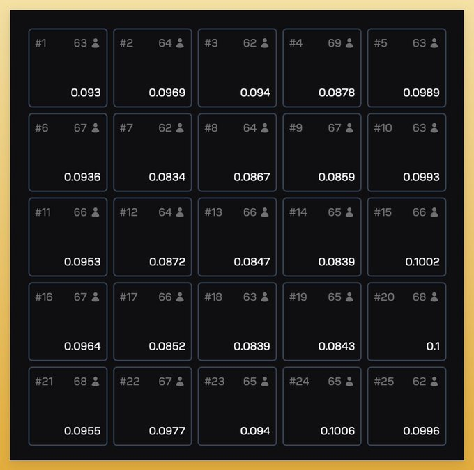
Oct 2025
Oct 2025
The Motherlode
This is where the Motherlode mechanism was introduced, adding 0.2 ORE per round to a ‘motherlode’ pool that has a 1 in 625 chance of being won by miners on the winning block. For every round where the motherlode is not hit, the ORE is accumulated, leading to motherlodes that are higher than 500 ORE. Together with the 1 ORE per round, this meant that the ORE protocol emits ~1.2 ORE per minute (as rounds are a minute each with a few seconds in between rounds).
Oct–Nov 2025
Oct–Nov 2025
Refining & Revenue
With this change, the mechanism of Refining came into play. A refining fee of 10% is charged to all ORE mining rewards when claimed; this fee is redistributed to other miners in proportion to their unclaimed ORE mining rewards. This meant that the longer a miner held their ORE, the more rewards they would accumulate, with APY varying depending on how many others withdrew their rewards.
10% of the Solana from mining rewards is collected by the protocol as revenue. This does not include already accrued mining rewards. With the revenue, the protocol allocates 1% towards the team, whilst the rest is allocated to buybacks of ORE. In the first week of this new version of ORE, there were over 990 Solana to use for buybacks.
Revenue is used to ‘bury’ ORE, which refers to burned tokens that can be mined again as long as the ORE is below its maximum supply limit — at the time of reintroduction a maximum of 5 million ORE (later changed to 3m). 90% of the ORE bought from revenue is buried whilst the other 10% is shared with stakers as yield.
It wasn’t long after this change that ORE quickly became top of everyone’s mind, as it once had before when it stopped the Solana chain just over a year prior to this reintroduction. Miners were flocking in from all corners of the chain, and thus began the rise of the community building tools to analyze this new marvel that many have come to name a ‘probability engine’.
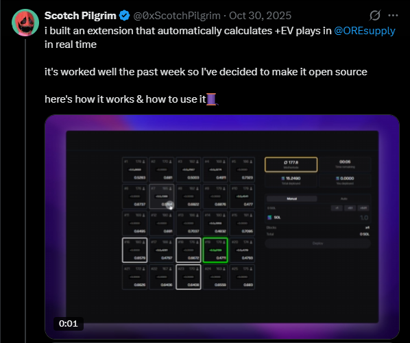
0xScotchPilgrim’s open-source mining extension post.
Nov 2025
Nov 2025
The Rise of Auto Miners
As the revenue piled up for ORE, miners started to devise different strategies to make mining more effective for themselves. This quickly turned into builders working on frontends that built on top of ORE’s protocol and allowed users to choose pre-defined strategies as well as create their own.
From basic strategies such as bidding 22 blocks, to restrictions on the size of Solana deployed on individual blocks in combination with other restrictions such as Motherlode size, these quickly became a norm for Auto Miners.
RefinOre, MineMore, LodeStar, OreMatic, OreMonster, EzMine — names you may have heard of by now. But you may wonder when they established themselves. The first mining extension was actually built by 0xScotchPilgrim for himself, and then he dropped a post where he open-sourced the extension that calculated +EV blocks.
This created an explosion of Auto Miners and a huge demand for analytics sites to help miners get the most of their Solana. Early leaders established themselves and are familiar names such as the Lodestar extension by RadiantsDAO, to Privy-integrated miners from RefinOre, Gmore.fun and MineMore. By the 21st of November, the Ore ecosystem contained over 7 popular Auto Miners and two main analytics sites.
For the next few weeks the ecosystem saw a battle of the Auto Miners with RefinOre leading, gaining up to 50% of all market share quite quickly due to their leading analytics site providing a great funnel for miners. By this time, the Seeker mobile from Solana had also launched alongside the official Ore dapp early in November. The developers within the Ore ecosystem quickly caught on and realized there is a new market to capture, and started releasing their Auto Miners on the Solana Dapp store — with Ore Miner IO showing incredible results of gaining hundreds of new users after launch (alongside a Toly retweet boosting this even further). MineMore soon followed with their launch and showed similar results with nearly 1,000 visits by Seeker users.
Over the next few months we would see Auto Miners struggling with load demands as well as new frontends being created to mine, even as far as popular game Photofinish providing a way to mine whilst watching horse racing.
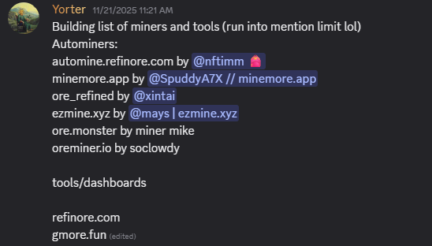
A snapshot of the Auto Miner ecosystem.
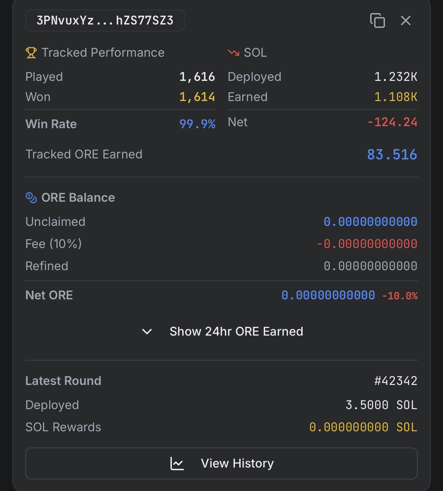
Wallet performance view.
Nov 2025
Nov 2025
Analytics Power Miners Returns
Within just two weeks of Ore reintroducing itself, the community had realized the need for analytics to help miners. Whilst some onchain wizards such as SlxTnT were running local analytics, others such as Kriptikz created ore-mining-tracker that provided a suite of analytics and would be used by others as a source of truth due to its level of onchain efficiency. Within days, others such as Degenfaragu and Nftimm / JussCubs created analytics sites that tried to cover further information analysis about ORE.
Whilst Kriptikz’s tool became something that devs flocked to and used as a reference themselves, RefinOre became the #1 analytics page used by most of the community and newcomers due to the reach of those involved (Nftimm & JussCubs) and the wealth of information provided in an easy-to-digest manner.
As the mining mania ensued in November and December, these analytics pages were under heavy load, and RefinOre had to constantly battle with loading times and other errors to keep up with user demand. This did not come without its rewards — one notable event being the donation of 30 Solana from well-known figure Frank Degods to RefinOre to help with their server upkeep.
Whilst RefinOre was seen as the best in class, it was sadly not kept up to standard once the hype around Ore faded, with one of the members in Nftimm finding full-time roles first at Kamino and then at Backpack, meaning he would take a step back leaving it mostly to co-founder JussCubs. This left a hole since mid-January and, although we have the long-standing Dune Dashboards from Neil and Counterparty Research, others have tried to slowly fill the void — through either in-app analytics such as those seen in MineMore, or a new analytics page by Mapmap.
With this, it is worth mentioning that onchain devs such as SlxTnT and Kriptikz have kept their own internal analytics, such as those seen below, that show the true TX count per day compared to those seen in the Counterparty Dune Dashboard — which seems to over-report TXs by roughly 1.5x.
Currently, there is demand for enhanced analytics on both the mining and protocol side that is yet to be claimed. If you are reading this, it could be you!
After the analytics page from RefinOre was placed into hiatus, the auto miner side of it lost its main funnel, leading other Auto Miners to climb up in market share. By the beginning of February, MineMore climbed up to capture the 50% dominance once held by RefinOre. They managed this through the various strategy settings a miner could use on their app, as well as by focusing on the community aspect — their own Discord allowed them to build tight-knit relationships with their users. RefinOre on the other hand expanded their offerings in other ways, enabling most SPL tokens to be used for mining and adding functionality that allowed AI agents to mine — utilizing the explosion of Openclaw/Moltbot as an opportunity to gain traction in that arena.
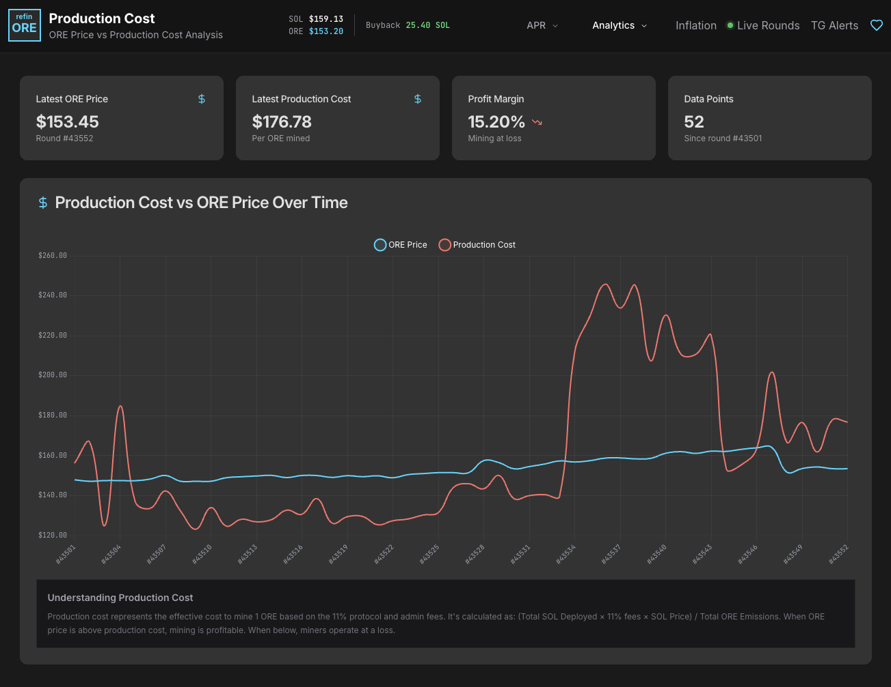
Production cost on RefinOre analytics.
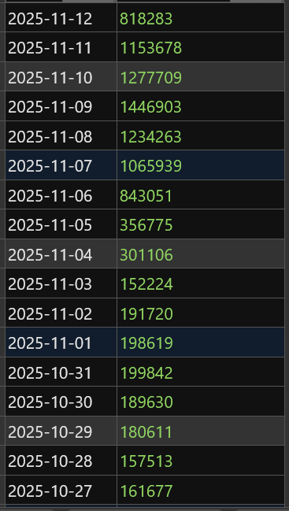
Total TXs per day for the OreV3 program, by Kriptikz.
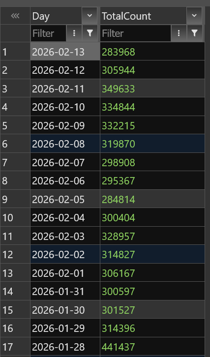
Comparison of reported TX counts.
Nov 2025
Nov 2025
DeFi Integrations Begin
At first, miners could only really get yield from their Ore through the refined yield that comes from those who claim their mined ore, as well as staking the Ore which yielded ~20% APY. As the hype around Ore increased, more and more integrations were announced — ranging from trading platforms such as Flash Trade to popular yield platforms such as Kamino and project0.
The first official integration announced was project0 on the 19th November, less than a month after Ore’s reintroduction. This was actually front-run by Flash Trade’s FLP8 pool that accompanied the ORE listing on the DEX, meaning people could hold ORE in the pool and get a % yield from fees traded on the Ore listing.
One notable listing event in the same timeframe was the Humidifi quoting announced on the 17th November — a historic moment, as Ore had not been listed on any major CEX at that time, which is usually required by AMMs for an asset to be quoted by them.
Shortly after, Pyth price feeds were enabled, which Flash Trade and project0 were early users of. The momentum at this point for ORE was accelerating at unprecedented rates, where it became the #1 app by 24hr revenue — surpassing pumpdotfun multiple times at the end of November.
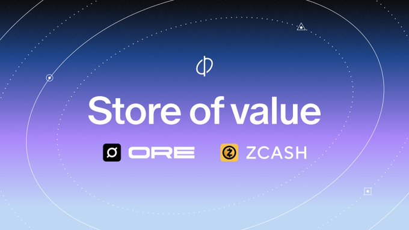
Ore as a native Store of Value.
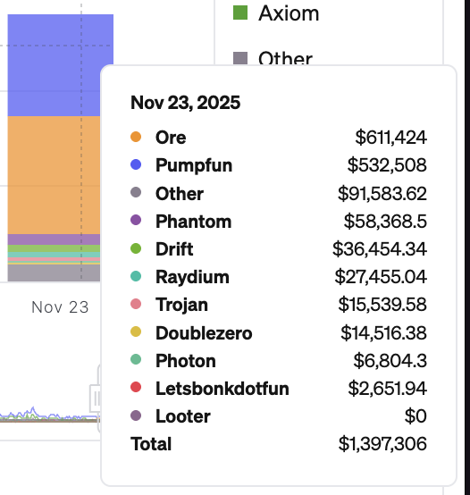
Humidifi quoting announcement.
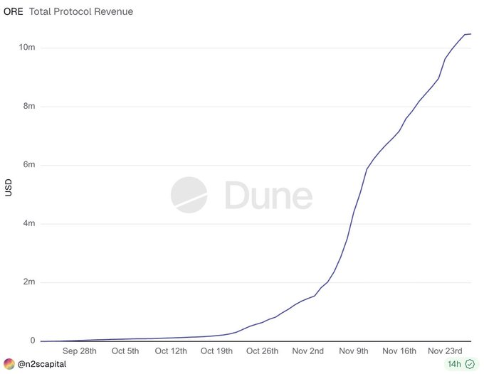
Ore ranked #1 by 24hr revenue.
Dec 2025
Dec 2025
Open Source & Supply Reduction
The support for ORE kept accumulating at this point, with Solana explorer Solscan integration parsing support for Ore — allowing users to see finer details of Ore transactions, and allowing developers to build better copy-trade and analytics tooling.
As Ore approached Christmas, the month of December started with an impactful decision. First, the Ore mining program became officially verified, in aid of its mission to champion open source on Solana. Secondly, the decision was made to freeze the mint authority on the contract and reduce the overall supply from 5 million down to 3 million. This came after the new mining system and its effects on net emissions showed that reaching the max supply would take a lot longer than initially planned, meaning the limit could be safely reduced.
In fact, from the 8th of November until the 18th February, the circulating amount of Ore only increased by ~5%. Considering that 1.2 ORE is mined every minute, it means only ~10% of Ore mined makes it into circulating supply over time — and at this pace, max supply would not be reached until after 2100.
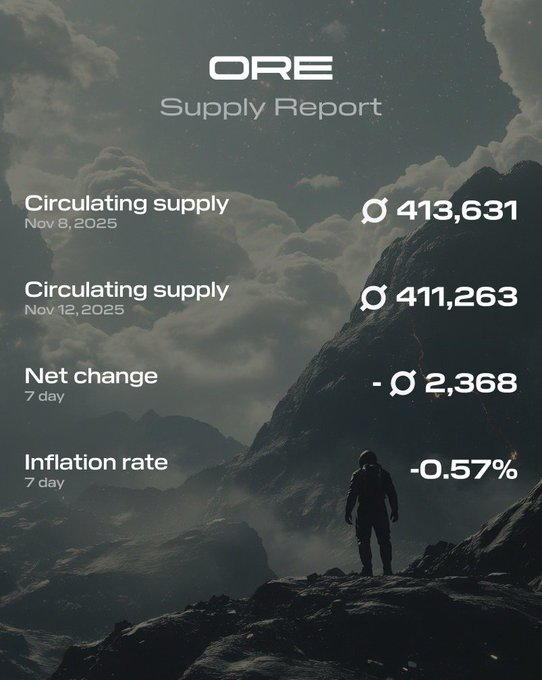
Solscan parsing support for Ore transactions.
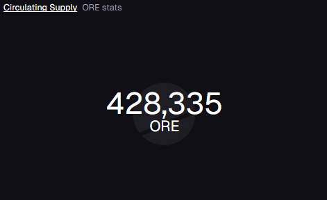
Ore supply report: 8–12th November vs circulating supply on 18th February.
Dec 2025
Dec 2025
Privacy & Encrypted Money
In the same month, privacy and encrypted money became a narrative that dominated the timeline, and ORE would not be the modern SoV it is without this in mind. An integration with Privacy Cash was announced on the 15th of December, meaning miners could deposit and encrypt their Solana to move it privately directly on the official Ore website. Two weeks later this was followed with an official Ore pool so that miners could encrypt their Ore. This pool became the biggest Privacy Cash pool outside of Solana itself within a single week, showing the people had a huge appetite for a private SoV that’s native to Solana.
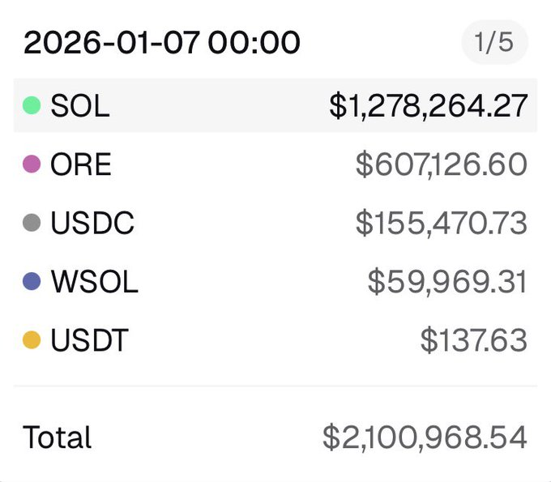
Dune Dashboard data on Privacy Cash pools.
Jan 2026
Jan 2026
TurboORE, stORE & Exponent
Within that same week, two monumental launches occurred — TurboORE powered by DefiCarrot, and the launch of stORE, ORE’s native LST that provides staking yield naturally accrued to stORE. TurboORE gave users the ability to gain leveraged exposure to Ore with liquidation protections, whilst stORE set the foundation for further DeFi integrations. This was kicked off with a Privacy Cash integration that saw it become the #1 largest shielded pool within 24 hours, indicating an insane amount of demand for shielded yield on this SoV.
Community member David Chapman wrote an article for those who find the process of converting Ore to stORE confusing. Swaps for stORE also went live on Kamino Swap within the same day, allowing users to get best-priced swaps with 0% fee.
Just one week later, stORE was listed on Exponent, which allowed users to split the asset into two parts: principal (PT-stORE) and yield (YT-stORE). This allows users to secure a fixed APY or speculate on the mining rewards with leveraged returns. At the same time, Ore pools in places such as Kamino kept printing returns that were unmatched — with ORE-SOL pools leading APY on Kamino for several weeks, which was unheard of considering Ore is below $100m market cap. By the 22nd of January on Kamino alone, ORE-SOL pools had printed $320k in fees.
On the same day, the community’s main philosopher Madhatt3r (@pokerchessman on X) posted an article with the banner that read ‘Ore is our Money’, reiterating the mindset the community held on ORE and what made it so powerful in an age where most digital currencies had their designs invalidated or smeared through mechanisms such as perps.
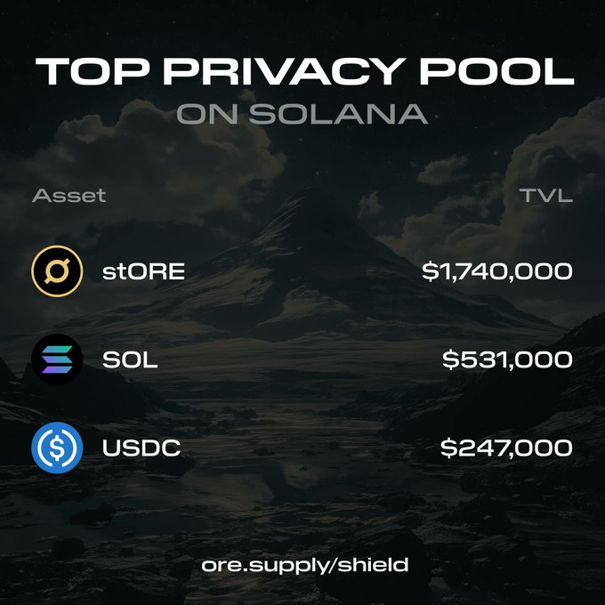
stORE becomes the top Privacy Cash shielded pool.
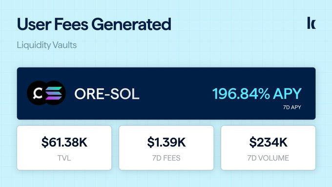
ORE-SOL pool fees on Kamino.
Jan–Feb 2026
Jan–Feb 2026
Community Adds Fuel
Throughout the DeFi integration era Ore has recently experienced, the community has done its part to add value to the ecosystem. Whether it’s been Auto Miners such as RefinOre allowing any SPL token to be used for mining (ignited by the SKR launch that rewarded many Seeker devs and users), prediction markets starting to be launched, or novel apps such as CompoundORE.
Whilst prediction markets have been the hype of the recent time with the rise of Polymarket and Kalshi, WhenMarket has been a prediction market for ranges of when the Motherlode hits.
But when it comes to DeFi itself, CompoundORE is the only true ‘DeFi’ app inside the Ore ecosystem and quite an intriguing concept. It is a 0-liquidation cash-advance protocol that allows users to stake ORE and acquire assets ranging from RWAs (Gold, Silver, Copper, Stocks), JLP, to plain simple USDC. It uses the staking rewards from the current week’s yield from the staked ORE to repay the loan on the asset (with a small fee), meaning users are protected from liquidations on the loan — and once they have finished repaying using the yield, they can do this over and over again.
There have also been informational sites built around Ore, such as one-pagers to get newcomers more acclimatized with ORE, as well as analytics pages to help make more informed decisions when looking to participate in the ecosystem.
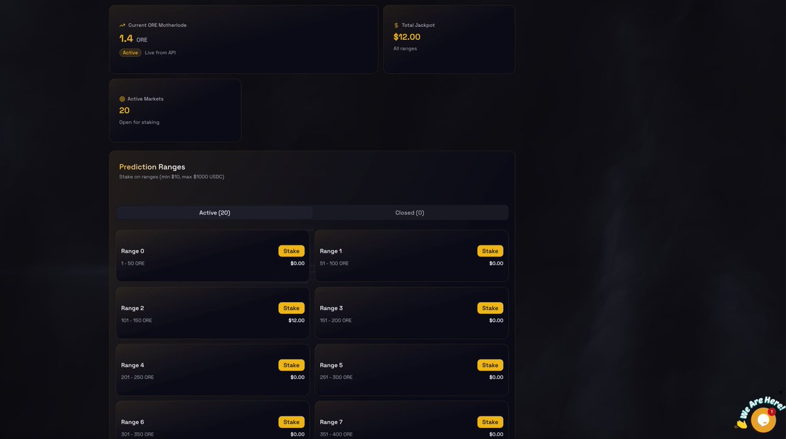
WhenMarket — a prediction market for Motherlode timing.
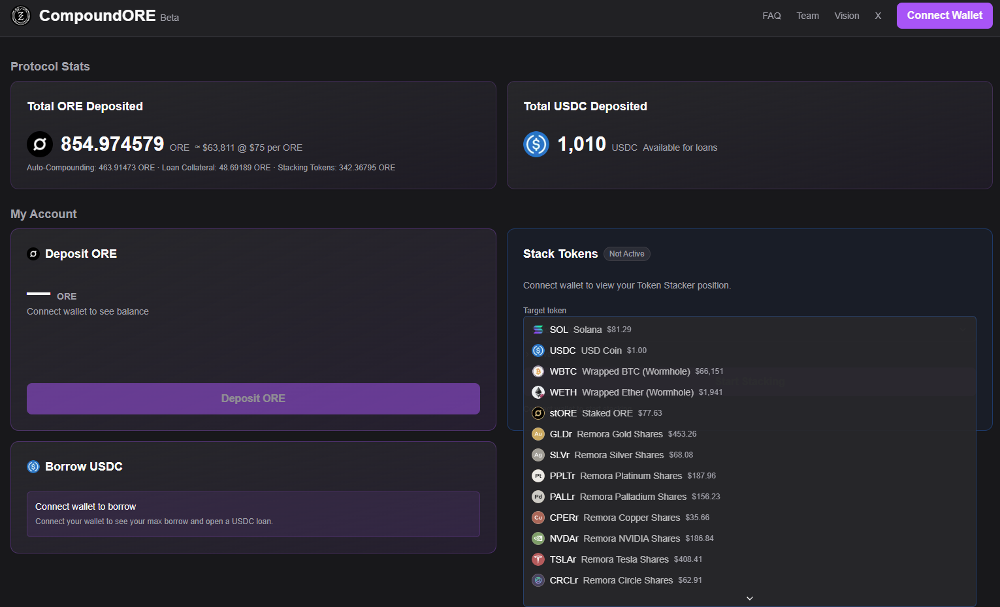
CompoundORE — a 0-liquidation cash-advance protocol.